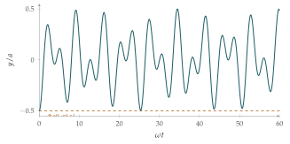

STEP III 2014, 문제 10
계속 읽기 전에 문제를 먼저 읽어 보자. 문제는 STEP Support Programme의 문제 데이터베이스에 있다: step.maths.org/questions/14-s3-q10
도입
용수철에 매달린 질량 하나는 단순하고 규칙적으로 위아래로 진동한다. 그런데 두 질량을 용수철로 이어 붙이면 운동이 복잡해 보인다. 각 질량은 불규칙하게 움찔거리고, 에너지는 한쪽에서 다른 쪽으로 출렁이며 옮겨 다닌다. 하지만 이 복잡함 속에는 완벽하게 단순한 두 운동, 곧 정규 모드(normal modes)가 숨어 있다. 정규 모드에서는 두 질량이 함께 움직이거나 정확히 반대로 움직이며, 각 모드는 고유한 진동수(frequency)로 진동한다. 이 계의 모든 운동은 두 모드의 결합이다.
이 문제에서는 세 용수철 사이에 놓인 두 질량의 정규 모드를 구한 다음, 놀라운 사실 하나를 증명(proof)한다. 한 질량만 변위시킨 채 정지 상태에서 출발하면, 이 계는 출발 위치로 결코 돌아오지 않는다. 그 까닭은 두 진동수의 비가 \(\sqrt3\)이고, \(\sqrt3\)이 무리수(irrational number)이기 때문이다.
시작하기 전에
\(X\)가 \(P\)로부터 거리 \(a + x\)에 있고 \(Y\)가 \(Q\)로부터 거리 \(a + y\)에 있을 때, 가운데 용수철 \(XY\)의 길이는 얼마인가? \(x\)와 \(y\)가 양수일 때 어느 용수철이 늘어나고 어느 용수철이 압축되는가?
세 길이의 합은 \(3a\)이므로 \(XY = 3a - (a + x) - (a + y) = a - x - y\)이다. \(x, y > 0\)일 때 바깥쪽 두 용수철은 (각각 \(x\)와 \(y\)만큼) 늘어나고, 가운데 용수철은 (\(x + y\)만큼) 압축된다.
차근차근 풀기
단계 1 운동 방정식
\(x\)는 \(P\)에서 \(Q\)로 향하는 방향으로 잰다. 용수철 \(PX\)의 늘어난 길이는 \(x\)이므로, 그 장력(tension) \(\frac{\lambda x}{a}\)는 \(X\)를 \(P\) 쪽으로 끌어당긴다. 용수철 \(XY\)의 늘어난 길이는 \(-(x + y)\)이므로, 그 장력 \(-\frac{\lambda(x + y)}{a}\)는 \(X\)를 \(Y\) 쪽으로 끌어당긴다(음의 장력은 미는 힘이다). 따라서 \[m\ddot x = -\frac{\lambda x}{a} - \frac{\lambda(x + y)}{a} = -\frac{\lambda}{a}(2x + y). \qed\] 대칭성에 의해(\(X\)와 \(Y\), \(P\)와 \(Q\)의 역할을 서로 바꾸면) \[m\ddot y = -\frac{\lambda}{a}(2y + x).\]
단계 2 방정식 분리하기
각 방정식에는 \(x\)와 \(y\)가 모두 들어 있다. 두 방정식을 어떻게 결합하면 \(x\)와 \(y\)의 결합 하나만 들어 있는 식이 되는가?
두 식을 빼고 더하면 \[m(\ddot x - \ddot y) = -\frac{\lambda}{a}(x - y), \qquad m(\ddot x + \ddot y) = -\frac{3\lambda}{a}(x + y).\] 각각은 단진동(simple harmonic motion)의 방정식이다. \(x - y\)는 \(\omega^2 = \frac{\lambda}{ma}\)로, \(x + y\)는 \(3\omega^2\)으로 진동한다.
단계 3 초기 조건
처음에 \(XP = a\)이고 \(YQ = \frac12a\)이므로 \(x = 0\), \(y = -\frac12a\)이며, 두 입자는 모두 정지해 있다. 따라서 \(t = 0\)에서 \(x - y = \frac12a\), \(x + y = -\frac12a\)이고 변화율은 \(0\)이므로 \[x - y = \tfrac12a\cos\omega t, \qquad x + y = -\tfrac12a\cos\sqrt3\,\omega t.\] 그러므로 \(A = \frac12a\), \(B = 0\)이다.■
단계 4 결코 돌아오지 않는다
\(y\)를 \(t\)에 대한 식으로 나타내어라. \(Y\)가 처음 위치로 돌아오려면 \(y = -\frac12a\)이어야 한다. 이때 두 코사인 값은 각각 얼마이어야 하는가?
두 식을 빼면 \(y = \frac12\bigl((x + y) - (x - y)\bigr) = -\frac14a\bigl(\cos\sqrt3\,\omega t + \cos\omega t\bigr)\)이다. \(y = -\frac12a\)이려면 \(\cos\sqrt3\,\omega t + \cos\omega t = 2\)이어야 하고, 각 코사인 값은 \(1\) 이하이므로 둘 다 \(1\)이어야 한다. 즉 어떤 정수 \(k\)와 \(j\)에 대하여 \[\omega t = 2\pi k, \qquad \sqrt3\,\omega t = 2\pi j\] 이다. \(t > 0\)이면 \(k \geq 1\)이고, 두 식을 나누면 \(\sqrt3 = \frac jk\)가 되는데, \(\sqrt3\)은 무리수이므로 이는 불가능하다. 따라서 \(Y\)는 결코 처음 위치로 돌아오지 않는다.■

돌아보기
방정식을 분리하는 결합을 찾아라. \(x - y\)와 \(x + y\)는 각각 자기만의 방정식을 만족했다.
대칭성이 그 결합을 알려 준다. 이 계는 양쪽을 서로 바꾸어도 변하지 않으므로, 대칭(symmetric) 결합과 반대칭(antisymmetric) 결합을 생각하는 것이 자연스럽다.
무리수라는 성질은 물리적 결과를 낳는다. 진동수의 비가 무리수이기 때문에 이 운동은 주기적(periodic)이지 않다.
숨은 수학
정규 모드는 고유벡터이다
두 방정식을 행렬(matrix) 방정식으로 쓰면 \[m\begin{pmatrix}\ddot x \\ \ddot y\end{pmatrix} = -\frac{\lambda}{a}\begin{pmatrix}2 & 1 \\ 1 & 2\end{pmatrix}\begin{pmatrix}x \\ y\end{pmatrix}.\] 방정식을 분리하는 결합은 이 행렬의 고유벡터(eigenvector)이다. 곧 고윳값(eigenvalue) \(1\)에 대응하는 \((1, -1)\)과 고윳값 \(3\)에 대응하는 \((1, 1)\)이다(7.2 절). 첫 번째 모드에서는 \(x = -y\)이다. 두 입자는 직선을 따라 같은 방향으로 움직이고(\(x\)와 \(y\)는 서로 반대쪽 끝에서 잰다는 점을 기억하자), 가운데 용수철은 길이를 그대로 유지한다. 두 번째 모드에서는 \(x = y\)이다. 두 입자는 서로 반대 방향으로 움직이며 가운데 용수철을 압축하고 늘이므로 진동수가 더 높아진다. 진동수의 제곱은 고윳값에 \(\frac{\lambda}{ma}\)를 곱한 값이다.
이 방법은 질량과 용수철이 몇 개이든 통한다. 결합된(coupled) 진동자 \(N\)개로 이루어진 계는 정규 모드를 \(N\)개 가지며, 이들은 대칭행렬의 고유벡터로 주어진다. 스펙트럼 정리(spectral theorem)는 이 고유벡터들이 언제나 존재하고 서로 수직임을 보장한다. 분자는 정규 모드로 진동하며, 화학자들은 분자가 흡수하는 적외선을 통해 분자를 식별한다. 건물과 다리에도 정규 모드가 있으며, 공학자들은 이 진동수가 바람과 지진의 진동수와 겹치지 않도록 해야 한다. 그리고 질량의 개수가 무한대로 갈 때 정규 모드는 진동하는 현의 배음이 되는데, 이것이 바로 푸리에 해석(Fourier analysis)의 출발점이다.
도달하지 않고 가까이 다가가기
\(Y\)는 정확히 돌아오지는 않지만, 원하는 만큼 가까이 다가갈 수는 있다. 그 근거는 크로네커(Kronecker)의 정리이다. \(\alpha\)가 무리수이면, 배수 \(\alpha, 2\alpha, 3\alpha, \ldots\)를 \(1\)을 법으로 하여 취한 값들은 \([0, 1]\)의 모든 수에 얼마든지 가까이 다가간다. 따라서 \(\omega t\)가 \(2\pi\)의 배수이면서 \(\sqrt3\,\omega t\)가 \(2\pi\)의 어떤 배수와 원하는 오차 이내로 가까운 시각을 찾을 수 있다. 이 운동은 준주기적(quasi-periodic)이다. 즉 토러스(torus)(각 모드마다 각 하나씩) 위를 감아 돌되 결코 닫히지 않는다. 진동수의 비가 유리수인가 무리수인가 하는 바로 이 구분이, 태양계의 안정성에 관한 KAM 정리의 핵심에 놓여 있다.
사고 기술
방정식들이 서로 얽혀 있으면, 독립적으로 변하는 변수들의 결합을 찾아라. 선형 문제에서는 그것이 고유벡터이다.
이는 10.6 절의 질량중심(centre of mass) 좌표와 상대 좌표(relative coordinates)와 같은 아이디어이다. 대학에서는 이것이 대각화(diagonalisation)가 된다. 행렬이 대각행렬이 되는 기저를 고르면, 서로 얽힌 연립방정식이 독립적인 방정식들로 풀려 나온다.
더 도전하기
에너지. 전체 에너지 \(\frac12m(\dot x^2 + \dot y^2) + \frac{\lambda}{2a}\bigl(x^2 + y^2 + (x + y)^2\bigr)\)가 일정함을 보이고, 이것이 정규 모드마다 하나씩인 두 항의 합으로 나누어지며 각 항이 따로 일정함을 보여라.
순수한 모드. 운동이 주기 \(\frac{2\pi}{\omega}\)인 주기 운동이 되려면 입자들을 어떻게 출발시켜야 하는가? 주기가 \(\frac{2\pi}{\sqrt3\,\omega}\)이려면 어떻게 해야 하는가?
더 단단한 가운데 용수철. 가운데 용수철의 탄성 계수(modulus)가 \(\lambda\) 대신 \(\mu\)이면, 두 정규 모드의 진동수를 구하여라. \(\mu/\lambda\)가 어떤 값일 때 모든 운동이 주기적인가?
세 질량. 같은 질량 셋이 두 고정점 사이에서 똑같은 용수철 넷으로 한 줄로 연결되어 있다. 행렬과 그 고윳값(\(2 - \sqrt2\), \(2\), \(2 + \sqrt2\))을 구하고, 세 정규 모드를 설명하여라.
더 읽을거리
A. P. French, Vibrations and Waves (MIT Introductory Physics Series), 결합 진동자와 정규 모드를 다룬 5장.
Gilbert Strang, Introduction to Linear Algebra (Wellesley-Cambridge), 고윳값을 다룬 장. 용수철과 질량이 주요 예로 나온다.
Steven Strogatz, Nonlinear Dynamics and Chaos (CRC Press), 토러스 위의 준주기 운동을 다룬 8장.